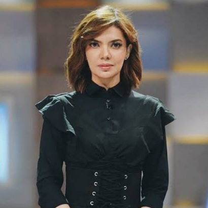

Perkenalan
Najwa Shihab, S.H., LL.M. (lahir 16 September 1977) adalah seorang pemeran dan wartawan Indonesia berdarah campuran Bugis dan Arab. Ia adalah putri kedua dari mantan Menteri Agama Kabinet Pembangunan VII Quraish Shihab. Najwa masuk ke dalam daftar Asia's Most Influential oleh majalah Tatler pada tahun 2023.
Karier
Awalnya merintis karier sebagai wartawan magang di RCTI, pada tahun 2000 dia memilih bergabung dengan MetroTV karena lebih mendukung minatnya terhadap jurnalisme. Pada tahun 2017, dia resmi mengundurkan diri dari Metro TV. Pada tahun 2018, Najwa Shihab mendirikan Narasi, perusahaan berita dan media omni-channel yang membuat dan mengelola beberapa jenis konten.
Pendidikan
Najwa adalah alumni Fakultas Hukum Universitas Indonesia angkatan tahun 1996. Semasa SMA, dia terpilih mengikuti program American Field Service, yang di Indonesia dilaksanakan oleh Yayasan Bina Antarbudaya, selama satu tahun di Amerika Serikat.
Karya
Duta Baca Indonesia dan Duta Pustaka Bergerak

Najwa Shihab ditunjuk sebagai Duta Baca Indonesia (2016-2020) oleh Perpustakaan Nasional Republik Indonesia, dengan tugas utama menyebarkan minat baca ke penjuru negeri. Selain Duta Baca Indonesia, Najwa juga menjadi Duta Pustaka Bergerak. Jaringan literasi yang mendedikasikan untuk membangun perpustakaan bergerak, dari satu wilayah ke wilayah lain, dengan sarana prasarana sederhana. Dalam program tersebut, ada pihak-pihak yang menyebarkan buku memakai kuda, pedati, perahu, vespa, dan sebagainya. Tugas Najwa adalah membangun kepedulian terhadap buku dan gerakan membaca, menyebarkan bahan bacaan ke berbagai penjuru negeri, dalam upayanya meningkatkan minat baca di Indonesia.
Mata Najwa
Najwa mulai membawakan acara gelar wicaranya sendiri yang berjudul Mata Najwa di Metro TV pada tanggal 25 November 2009. Acara ini ditayangkan setiap hari Rabu pukul 8 malam WIB hingga pukul 21.30 WIB. Beberapa tamunya antara lain mantan presiden B.J. Habibie dan Megawati Soekarnoputri, mantan wakil presiden Boediono dan Jusuf Kalla serta kemudian mantan Gubernur Jakarta, Joko Widodo. Acaranya berakhir pada 23 Agustus 2017 di Metro TV karena dia memutuskan untuk keluar dari saluran tersebut. Dia dan Mata Najwa kembali ke televisi tetapi di saluran yang berbeda, Trans7, pada 10 Januari 2018.
Wawancara Terawan
Pada bulan Oktober 2020, Najwa dilaporkan ke polisi oleh Ketua Relawan Persatuan Jokowi, Silvia Devi Soembarto karena aksinya mewawancarai kursi tamu kosong yang seharusnya diisi oleh Menteri Kesehatan Terawan Agus Putranto pada acara Mata Najwa edisi 28 September 2020. Melalui akun Instagramnya, Najwa menyatakan bahwa wawancaranya tersebut agar para pejabat publik, khususnya Terawan yang hilang dalam aksi, menjelaskan kebijakannya dalam penanganan pandemi COVID-19 dan bahwa penjelasannya tidak harus dilakukan di acaranya. Wawancara dengan kursi kosong ini merupakan yang pertama di Indonesia dan Najwa menganggap tindakannya masih merupakan bentuk jurnalisme seperti yang dilakukan oleh jurnalis di Inggris dan Amerika Serikat juga.
Prestasi dan Pencapaian lainnya

:strip_icc():format(webp)/kly-media-production/medias/888450/original/e6a41cc6ca6df7612c925ec6f7107421b__Pemenang_PGA_Kategori_Presenter_Talkshow_Berita___1__-_28_Mei_2015_-_Wimbarsana_1_.JPG)